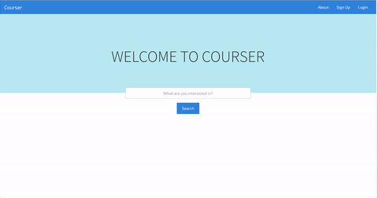

Marcus Jefferson
Student, Back End Developer, Friend
"My favorite things in life don’t cost any money. It’s really clear that the most precious resource we all have is time."
Steve Jobs
Education
University of Illinois at Urbana-Champaign
Bachelor of Science: Computer Engineering Fall 2017
During the Fall of 2014, I entered the University of Illinois, as a transfer student from the College of Dupage. In my time at UIUC, I have learned a lot about myself and engineering. Starting out, I was interested in how computers communicated across networks and the intricacies of their topology. But as time moved forward, that interest faded. Originally, I became intrigued in computer engineering, so I could help people better understand technology, but I just wasn't able to see how I could do it by attempting to figure out how computers were networked and created. However with web development, it was very intuitive to see how I might be able to help make people's lives easier. That's why web development is so fascinating to me. In a very short time, one is able to become an innovator. The prospects of web development are enormous, and so I've decided to dedicate much of my time to being apart of it.
Projects
Courser: an elective exploring project
Courser started as a learning platform, so I could get used to the MEAN stack and learn a bit about the DOM tree. It's grown quite a bit from an idea I had into a small functioning website. The site uses MongoDB's built in search to find school courses that relate to search terms. This part of the site actually works fairly well, although I've wanted to change the way it searches, so that it's more accurate and interactive for the user. I'm soon planning on making a blog for the Courser site, so I can track my progress. This is the largest project I've worked on so far, and I'm proud of what I've created. I hope, when it's finished, people will enjoy using it as much as I enjoyed building it.
Year Of Programming
The Year Of Programming project started off as a reddit post asking people to join in on colaborative solutions and peer review of technical interview questions and other programming concepts. It grew from a small chat and has graduated to a github with about 200 forks from people all over the world and a slack team with roughly 500 members. I serve as one of the founders and administrators of this project. As well as overseeing day to day operations, I also participate in writing unit tests for the challenges in Python. I am also the owner of the organizations domain and have done all of the web development work thus far. Future plans are to build a full stack site to help streamline the challenge submission process. You can learn more about that here.

One a Day
After failing nearly every technical interview I had during the fall 2016 semester, I've pledged to myself that I will complete at least 1 coding practice problem every day. This is something that will hopefully sharpen my interviewing and general coding skills alike. Although this isn't a typical project that would manifest itself into something tangible, I still consider it an outstanding use of time for myself. I've choosen to complete everything in python as I believe this language is extremely versitle and would benifit me the most.
Industry Experience

Software Development at AT&T
Over the summers of 2015 and 2016 I had the previlidge to work at AT&T as a software Engineer for the Technology Development Program. I learned a great deal about enterprise software and how to work efficiently on a team. My projects here included working on a visual basic desktop client for a desktop virtualization api, and working on a java program that sent emails to executives notifying them of account balances.